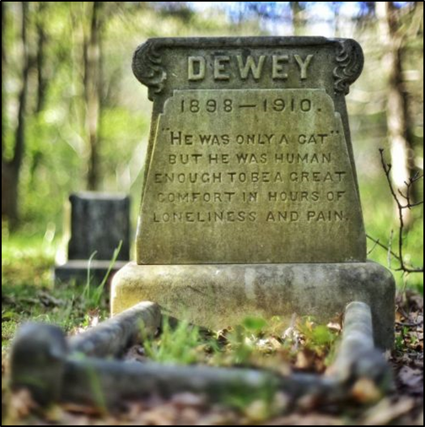
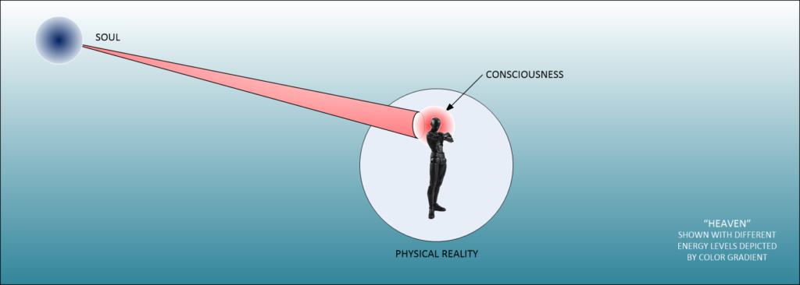
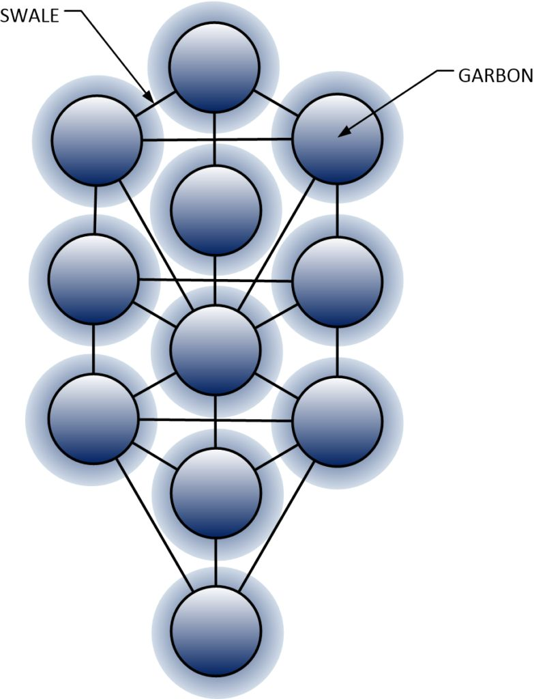
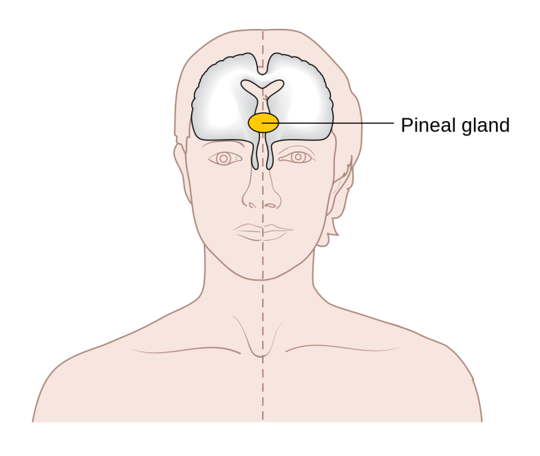
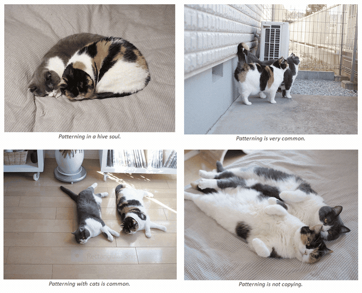
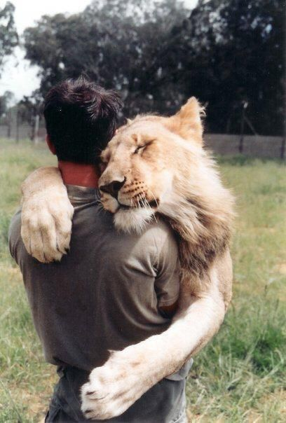
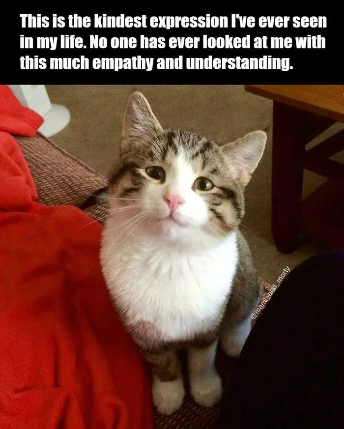
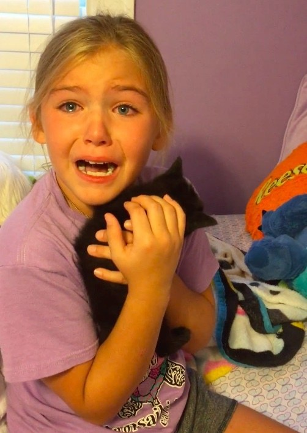
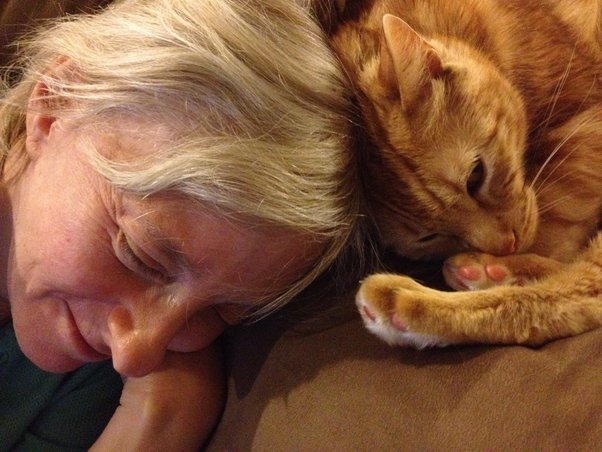

What happens to our pets when they die? Do they go into a dark nothingness? Do they go to Paradise? Do cats go to Cat Heaven? Does the soul or spirit fly free? Are there others that help them? Will our loved ones be able to remember our times together? These are questions that all pet owners ask when their beloved pal dies. Here, I will try to answer these questions in the only way that I know how. Through my MAJestic entanglements.
I am a pet lover. I love my dogs and my cats. When I was young, we had birds, turtles, rabbits, and hamsters. Although, the truth is that I wasn’t really close to any of the smaller critters. I was only close to my dogs and cats. You know, when you get attached to your pets, you begin to bond in special ways. Dare I say it; spiritual ways.
And, when they pass on, well there are (sometimes) events that point to a life outside of the corporal…
Introduction
When a loved one dies, there is a period of grief.
This is true whether or not it is a human person or a beloved pet. Since most people have no attachment with their spiritual selves, they think that the relationship ends upon death. They believe that we are just the physical and nothing more. Death is a mystery to these people. To them, you are either alive or gone. To them, once you are gone you are forever gone. To them, your grief is a normal psychological condition. It has no other importance at all.
They are very wrong.
Spirit is REAL
There is a very important spiritual component to our being. You can call it religion or quantum physics. These are just names. For the record, there is a soul. It is not only consciousness. We all have it. That includes me. It includes you, the reader.

He was “only” a cat. (Image Source)
It also includes our pets. Yes. Contrary to what certain religions preach, all ambulatory entities possess souls. Though, their souls and their spiritual realities are quite different from ours. They do have spiritual elements to their lives. As such, we can see that they live on and even return back to us in another body!
I have some experiences that prove this.
Religion
What I have to posit herein is what I have personally experienced.
But, beware; it is presented in accordance with my own personal experiences. As such, those experiences necessarily gave me a VERY DIFFERENT point of view compared to everyone else. What I was involved is really, well, strange.
Anyways, that really doesn’t matter right now. What does matter is that I present some of the things that I have learned and experienced. The things are wide, diverse and unusual. I have learned about souls, Heaven, and the makeup of our reality.
I know a few things about human heaven, cat heaven, and even dog heaven. I hope others will benefit from it. If you don’t, well you can move on. There are other things out there for you.
Because of that, it will get many people angry.
What is REAL is often Hidden From Us
According to everyone, scientists, experts, government officials, religious leaders, and the mailman down the street, there is nothing but what we see. There are no spirits, no good and no bad. There are no morals. Our life is just what we see and nothing else. As such, there is nothing you the reader need to concern yourself with.
You just keep reading the government approved media. They will tell you all that you need to know. They will label what you are not to read as evil. Just obey. Keep paying your taxes.
The government will take care of you.
As such, if you listen to those people, there is only one reality and we are in the center of it. There are no souls, and no spirits. There is nothing except religions, and unless you follow Mohammed, all religions are bunk anyways. After all, that is what was crammed down our throats for the eight long years under Obama. (Ah, now everybody, don’t get your tail feathers all ruffled up. Obama wasn’t all that bad; it’s just that I never bought into his vision of what America was, and what it now should be.)
They are all wrong.
Don’t be a Fixed and Closed Mind
What I have to say will anger those who demand set nice and scientific answers and mathematical proofs. It will anger those who follow a set and formalized religion or two. It will anger those who disagree with me.
I am sorry, but this is what I know.
I have no desire to spend the time writing something that I don’t believe in. It would be a waste of my time, as well as a waste of your time to read it. It would benefit no one. Therefore, I only write what I know about and what I believe is true.
This particular subject is what I believe it is to be true.
Not a Rehash of Conventional Lore

Therefore, what is presented here is not a rehash of conventional religious lore. (Someone quotes a passage from the Bible and elaborates on it regarding a specific issue.) Neither is it a new look into the world of quantum physics. (We see this all the time on popular science publications. It’s just a rehash of well-established lore repackaged for commercial distribution.)
It is instead what I have learned though my MAJestic entanglement. (Not my actual mission events, but rather an understanding associated with it.) So, it’s going to sound pretty strange to most people.
To prevent the reader from getting too upset, I would suggest they stop reading and go no further. It will not be comfortable to those with fixed belief systems.

Now, after all that lengthy background information, let’s get to my illustrative stories.
My first story concerns a cat named “Phelie”. (I use cats because I only had cats during my entanglement. So can only draw my experiences from my relationships with them.) As such, let’s look at this experience of mine…
The story about my cat Phelie
At the time, I was living on the Indiana – Kentucky border along the Ohio River there. I was living with my first wife. We had a place in the valley along the river there. In fact, there was a highway right along the river, and our house was right there next to the highway. (Well, you had to drive down a gravel driveway to get to the road, but it’s really the same thing.)
We lived in a mobile home. (Doesn’t most people in Kentucky?) It wasn’t a “double wide”. It was a 14-foot wide by 60-foot long home built in the middle 1970’s. We lived in a trailer park, and it was really cheap. We only paid $40 a month for park space rent.
For those who are unawares, it was the middle of the summer. And, trust me, along the river in Kentucky was hot and super humid could be unbearable at times.
A Stormy Night
It was around 10:00 in the evening and there was a rainstorm out. This wasn’t just an average rainstorm. It was a torrential downpour. It was raining buckets.
I for one was very happy to be in. Outside the weather was horrible. Thunder and lightning was crashing all around us. It was one of those nights where you were completely glad that you were safe and warm inside.
We had finished eating dinner and the wife was sitting down watching television.
Then suddenly she arched her back. She stared straight ahead. Goose-bump pimples covered her entire arms.
Then she snapped out of it.
My Wife was Called Upon
She looked at me with this expression.
I really don’t know how to describe it. It was part fear, and part worry. Her eyes looked at me imploringly.
She told me. No, I take it back, she ordered me. We absolutely needed to go out. We needed to leave right then and there. We had to get cat food. We just HAD to. She kept saying that we needed to feed the cats. We needed to keep them warm and safe. We needed to help the cats.
I responded. I told her that our cats were fine. They were all around us resting. They were doing cat-typical behavior. They were all there with us “chilling out”.
A Call for Action
She got up off the couch and started running all over the house looking for her shoes. It was like she was electric. She was on fire and it was as if every alarm bell in her soul was going off!
She couldn’t find an umbrella, but she started to go out anyways. I stopped her. I told her that we had plenty of cat food. She didn’t care.
We had to leave THEN and NOW!
Well, we argued for a few minutes. Reluctantly I went and got the car keys and put on my shoes. I knew better than to argue with her. (As do all married men. Sooner or later, you learn that there are some things that you do not question, if you want to have a good and stable life.) If she put her mind to something, that was it!
Off to the Car
We ran out to the car in the rain. I am not going to lie, I was drenched. Just the fifteen second run to the car and everything I wore was soaked through and through. We shut the doors, and turned on the ignition. My wife was leading with me. “Hurry!” she said. I told her that “We’re going. We’re going”.
We pulled out in what must have been the rainstorm of the century. It was like something you would find in Southern Louisiana. It was so fierce. We drove down the gravel road, the windshield wipers furiously trying to keep the window clear. We drove down to the end of the gravel road to the highway.
As we went down the small rainy incline to the highway, the head beam lights fell onto the highway surface. And there, there right in front of us was a dead cat. Right in front of us it lay. Dead. Lifeless with rain pouring down.
A Dead Cat
The reader might not understand, but I am not going to let a dead cat lie right in front of my driveway. Even in the rain. I mean, it was right there. Smack dab in front of us. It blocked our route out.
So, in the rain, I exited the car and went to the cat. Yup. There was no question at all about it. It was dead. The side was crushed and it was absolutely dead. The little guy was off in Cat Heaven. It was still warm, but had been dead for a few minutes at least.
I picked it up.
The car headlights helped me see my way around that storm from Hell. I gingerly picked it up and carried it off to the far end of the road and set it down in some tall grass. Rigor mortis had not yet set in, and the dead cat hung limp in my arms.
I set it down softly and respectfully. “Poor little guy”, I thought.
The poor guy is off on his way to Cat Heaven.
In the Rain
I stood there for a moment, and then sighed and turned back to the car.
The headlights were shining on me in the rain. Mini rivers were forming on both sides of the highway from all the rain. I waited for a car to pass by, and then I splashed through the moving water and then headed back to the car. But…
But…
Before I could open the door, I heard a faint meow. I stopped and listened again. Meow. This time it was still faint, but a little louder. I went to look for it. I just didn’t know where it was coming from.
And I found it.
A tiny kitten had somehow managed to make it to a low shrub at the side of the highway. It backed away from me. It was wet, and cold. It shivered terribly and its little cries were pathetic against the constant drumbeat of the rain.
A Tiny Kitten
It was a wet scrawny little thing.
I grabbed it by its tiny little neck. And, I dragged it out from under the pathetic little shrub. It fit within my wet hand, and I carefully carried it to the car. I handed it to my wife and she put it close to her chest and kept it warm.
Then I went out and looked to see if there were any others. I looked. But, I couldn’t find any.
When I got back into the car, my wife was calm. She was holding the little kitten close and said softly for me to go and see if I could get some milk or something at the store.
The little kitten was traumatized and in bad shape. So we drove to the local store and I bought a small can of condensed milk, and then we drove home.
We cleaned the little guy up.
It was a female grey-striped mainecoon with white mittens who was so young that it was still nursing. So we fed it out of an eyedropper. My wife held it all night. She was no longer hysterical and in worry. It was like a light switch was switched. Now, she was very, very calm. She lay in bed holding it. It was our fate.
Thank You
Now, here is the curious point.
That night, she told me that she felt like a giant mother cat was on top of her and kneading her chest with her paws. Left and right. Left and right. Left and right. Softly and purring.
This was pretty darn strange. What in the world? I have never heard of such a thing. A giant invisible cat? And what’s this smashing her chest? Crazy and strange stuff for certain!
So, I asked her “seriously”. She replied to me matter of factly,”absolutely”.
And, you know what? I believe her.
What happened
Friends have told me that it was just coincidence that we found the kitten at the same time as my wife’s urgent need to get cat food. They say that I am reading too much into this event. They say that I am crazy to believe in things that I cannot see.
I disagree.
Somehow, the mother cat found us. Maybe it was because we already had four cats. Or maybe it was because my wife was a very “sensitive” person. But I do believe that when the mother cat died, it must have been carrying the little kitten across the highway. And, then somehow it “connected” to my wife.
It didn’t connect to me.
Maybe it was because my wife was a female. Or, maybe it tried to connect to me, but I couldn’t sense anything.
Whatever, there was a connection. I actually saw how my wife reacted when the connection was made. I know that this kind of experience is subjective. To those who don’t believe in the reality of the soul, this story is fantastical. Yet it is completely and absolutely true.
As such, it can tell us many things…
What this can tell us
Look at this little story, and it is a true one. It really, really is. It happened exactly as I recalled it. There are a couple of things that we can learn from it.
- The mother cat was dead, but it managed to communicate with my wife.
- The mother cat was not yet in Cat Heaven when it died.
- The communication was not physical. It was spiritual. My wife “felt” a panic. She felt a need to protect and feed the cats. She felt an urgency. She felt pure concern.
- The information conveyed was specific. Get food. Feed the cat. Keep the kitten safe. Do it immediately. It is an emergency.
- After the kitten was rescued, the mother cat said “thank you” and told my wife to feed the kitten.
All these things can provide us with some important insights…
- The consciousness lives on after the physical body dies.
- The consciousness cares for the loved ones and leaves messages when necessary.
- If you are sensitive or “attuned” to something or a situation, you can be made aware of situations as they develop.
The rest of the story
The reader can rest assured that the kitten grew up to be a beautiful black and grey striped mainecoon. She was always on the small size, but she ended up being the boss of the household. She traveled everywhere we went, and lived a nice ripe old age of sixteen. She was a good cat. When she passed on, it was through old age.
Aside from the first moment we found her, we never had any other contact with the spirit cat.
The Lesson about Texie
Here is another story about a cat. As I stated previously, my experiences concern cats.
While Phelie was my “wife’s cat” (if you know what I mean), this cat was “my cat”. He was my little buddy. Here is a story about an incident that I had with him. This story illustrates reincarnation of spirit and how a loved one will always return to their families.
Before we begin, however, we need to talk about an earlier cat; Samantha Panta.
My first cat after marriage
I used to have dogs (Siberian Huskies) and cats while I was growing up. Then during my college years, and my stint in the US Navy and my MAJestic training, I didn’t have any pets.
Eventually, a cat walked into my life.
It was a big fluffy orange and white mainecoon. We named him Samantha Panta, and he was our cat. He would go on walks (Yes, we would go on hikes for hours at a time, and he would walk with us.) with us and do everything with us. We developed a very good and close bond with him.
The Fields of Indiana
At that time, we lived in Indiana.
Now, for those of you who are unaware, Indiana is frightenly hot and humid in the summer and frozen and windy in the winter. Springs are glorious, but you have to endure two to three months of living among fields of mud as far as the eyes can see. Fall is also a very special time. What this means is that the winters are too short to invest in a wood burning stove, and the summers are too short to invest in an air conditioner.
For us, we used central kerosene heating in the winter and no air conditioning in the summer.
At that time, it was the late 1980’s. I was a youngish man in my late 20’s and we were trying hard to save and make a life for ourselves. In order to save, we cut corners. One of the ways that we did it was not to use an air conditioner.
Instead, when the weather got too hot, we would take rides in the car with the air conditioner on. We would ride the back-country roads of North Central Indiana, visiting cemeteries (the only free places to visit) and listening to music.
Of course, that was how we dealt with things at that time. I am sure that the reader is much more intelligent than we were then. So you probably never needed to handle things like we did. We were so silly.
Chillin’ Out in the Countryside
Anyways, often we would ride to a quiet spot and park there with the AC and the radio on. Again, in Indiana there are precious free spots to park and relax. It is all owned by someone. It is all farmland consisting of soybeans and corn as far as the eye can see.
If you wanted shade, you would need to find an isolated cemetery and park under one of the trees there. It sounds boring, but unless you lived there you have no idea how we were able to cope with the heat. Indiana could become like a terrible furnace in the Summer. That’s just the way it was.
Music
Now, we would often listen to cassette tapes while we rode in the car. (This was before CD’s, USB’s and Satellite Radio.) We had a box of them.
Most radio stations in Indiana at that time had been bought up with media mega-corporations. As such, they toned down the music programming to a bland pop 40 or pop 100 on constant rotation. If you don’t mind listening to Rod Stewarts’ “Maggie May” every five or ten minutes or so, it was ok. For me, who preferred more alternative musical tastes, it drove me crazy. So we would order music out of music clubs and listen to the tapes in the car.
Some songs were so-so, but some were notable.
At that time, I happened to like “Tears for Fears”, “Corey Hart” and “Squeeze” among others. Some songs we would sing to, and others we would listen to and it would make us sad. Music in that little car of ours with our little cat was our “special time” together. We rode in a beat-up little white Mazda RX7. It was a two seater and big enough for all three of us. My cat would hang out in the back (on the middle hump) where the AC would blow on him.
A Special Moment
There was one special moment that I would like to do almost every day. I would put the cassette tape of “Baby Love” in the radio player. My little cat Samantha Panta would crawl up on my lap and I would sing to the cat. As I would sing, the cat would close his eyes half shut and purr. It was a loving moment. It was a moment that he and I shared.
(Of course, there were other songs. I used to sing “Fool for my Kitty!”, which was really the Foghat song “Fool for the city” with my own custom lyrics. LOL! I would sing it when I was in a very playful mood. Never the less, the most memorable and loving song was indeed the song “Baby Love”.)
(I didn’t only do this for my various cats. I also do this for my dogs as well. In fact, my dog Shao Pi loves to sing with me. He really does! He will just whimper and bark along with me, I am not at all kidding.)
Back to Heaven
Unfortunately, my little cat did not live long.
He contracted feline FLV. He started to die. I had no experience with a pet dying and I refused to “put him down”. I just did what I could trying to keep him alive. It took a full really long month for him to die. It was sad and painful. After three short years of life, he finally took one last breath and died. He left us and went to Cat Heaven.
We carried him across the frozen farm fields near our house on an icy January night. It was terribly cold. The ground was rock solid hard. I carried him to a wooded area and set his body under a fallen tree there. We said “good bye” and that was that.
Two Years Later
A couple of years passed.
One spring day, some guys drove up to the house in a convertible. They had a kitten with them, and they were told by someone that I liked cats, and I would take him in.
I was in the yard, and they asked me if I wanted a kitten. They handed the kitten to me. I looked at him. He was maybe two or three months old.
He was a tuxedo cat. This means that he was a black and white shorthair. He had one bad eye that had a full white cataract on it. However, he was very affectionate.
I told the guys that I certainly liked this little guy.
But, I said, I already had a bunch of cats. I just couldn’t take the little guy in. I was sorry, but I had no room. They drove off, and I went inside the house.
Well, he stayed around
Later on, I went out to empty the trash. There was the little kitten. Those stinkers! They left it at the house anyways. Ugh!
So, I took it in, and let me tell you, there was an immediate bonding between both of us. He was my little cat. We named him “Texie”. Why? I don’t know. It fit him. From then on, this cat and I were very close. Maybe you the reader have a close relationship with your dogs or cat, well it was like that. This guy and I were inseparable.
He was my little buddy.
Five Years Later
About five years after first getting Texie, we were living in Shreveport Louisiana. We had relocated from Indiana, to Kentucky, to Mississippi and finally to Shreveport, Louisiana.
I had been upsized, downsized, resized under corporate restructures, company buyouts, hostile takeovers, and just plain bad bosses. Being a design engineer during the 1980’s and the 1990’s was NOT a stable occupation.
I had a new position in Boston, Mass. So I had bought a class “A” motor-home with the hush money the company paid me.
Non-Disclosure Agreements
(For those of you that are unawares, many companies break the law routinely. To get around the laws, they make you sign to NDA’s and other documents that will allow you to get unemployment benefits, and even cash bonuses if you agree to not say anything.)
The company that I worked at in Shreveport gave me a lump sum of $10,000 to keep my mouth shut. This was in the early 1990’s, so the amount might be around $60,000 today. I took it, and used it to purchase a motor-home.
We were sorting through our things. Some things we were just throwing out. Other things we were putting into storage. While other things were going into the motor-home. I was in the motor-home putting stuff away. My little cat Texie was there with me.
Old Music
I had found a box of old cassette tapes that we had put in storage many years earlier. The tape on the box was yellow with age and a layer of dust was on it. Inside were the tapes that we used to listen to when we lived in Northern Indiana. I would say that I hadn’t seen those tapes in at least a few years.
So, of course, I put some of the tapes in and was listening to them.
A Cryout!
I well remember this event. I was in the back of the RV. I was there sorting stuff under one of the beds there. My cat Texie was on the sofa at the kitchen dining table. On the radio was playing a cassette from “Pebbles”. Then the song “Baby Love” came on. The first bars of the song began to play…
As soon as it came on, my little cat goes “MEOW!”
He leaped off the sofa as if it was electric. He ran to the driver’s seat, and got on it. Sitting there, with his two paws holding the rear of the seat, he shook his head and looked at me. “MEOW!” he yelled!
I got up, and asked “What’s up Texie? What do you want?”
He then got on his back on the seat and exposed his belly. He started to purr and coo.
So, I said “What? You want me to hold you?”
He just looked at me with loving eyes. So, I went and picked him up and sat down in the driver’s seat. Then a funny thing happened. He took on the exact same body language of my older cat Samantha Panta. He lay there in my lap. He purred and had the same half-closed eyes as my old cat. I started to sing to him the rest of the song.
His purring got much louder. MUCH louder. His eyes closed and we listened to the rest of the song together.
The Song Ended
When the song ended, he let out a calm sigh. Then he stood up on his rear legs and put both paws around my neck. He then rubbed his face all over mine and gave me a kiss. Then he got down and jumped off my lap. Then, like nothing happened, he walked down the RV kitchen area and exited through the side door.
I just sat there stupefied.
What this can tell us
Again, this little story is true. People can argue that it is just coincidence. However, I know different. This really happened. From this experience, I have drawn the following conclusions;
- The consciousness from my old cat found its way into a new cat.
- Consciousness can occupy different bodies yet retain access to all the memories.
- It took some time before the new cat came into my life.
- The appearance of the old cat and the new cat was very different.
- The relationships between me and both cats were similar and very close.
- I immediately “felt” a bond with the new cat.
From these conclusions, we can also identify some rules of spirit;
- Cats can reincarnate.
- If cats can, other creatures can as well.
- Reincarnation reappearance occurs when a creature has a close bond with another.
- The bond that can result in directed reincarnation can be either good or bad.
- If the bond is good, then a good relationship can continue.
- If the bond is bad, then a bad relationship will continue to fester until it is resolved.
So, I tell this to the reader; if you have lost a loved one don’t be sad. They will return to you. Or, barring that, you will return to them. It is your love for each other that acts like a big bright signpost that will attract you two back together.
The rest of the story
Texie lived on. He was doing well in Massachusetts. I had to go away for a two-day trip, and left him and two other cats alone at the house. When I returned, I found him there crying loudly. His neck was swollen terribly. His nose was white instead of pink. We took him to the vet first thing on Sunday morning.
The vet told us that his white blood count was zero and they had no idea how he could possibly be alive. They suggested we get blood transfusions, but no hospitals we contacted could help us. As such, we made the difficult decision to put him down. My wife and I held each other and he lay there in the valley between our two chests. We all gave him our goodbyes and we gave him as much love as we could. Then we handled him to the doctor.
Going to Cat Heaven
The doctor said that she had never seen such a loving cat, and really had a difficult time putting him to sleep. Finally it was done. He died and went up to Cat Heaven.
We went into the car. Sad and shocked. You know, we expected to heal him, not to have to put a dying cat down. As we sat there in the car, staring out at the lush greenery of the parking lot, we both suddenly felt a wash of love and care. It was like a pleasant warm towel of love around both of us, then it went away.

Communication between Individuals
One thing that we need to understand is that we don’t just communicate by words. We use body language. We use intonations. We use special word combinations. We also use ways to communicate by “feelings”. Anyone who is married can attest to this. Your partner is not taking and is maybe in the other room. But, you feel that something is wrong. You don’t know what it is, but you know that something is not right.
These feelings should not be discounted.
One of the most important things we need to understand is that there is a [1] physical reality and a [2] non-physical reality.
A person who is sensitive can detect changes in the non-physical reality. For lack of better terms, the non-physical reality is the realm of quanta in various state of wave properties. While the physical reality is the realm of quanta in various states of particle behaviors.
Newtonian Physics = Only the physical exists. Quantum Physics = The Physical exists alongside the non-Physical.
A sensitive person can detect changes in nearby wave behaviors relative to their personal relationships with others. This can be between people, and this can be between us and our pets…
Lesson from Smokey my “Little Toke”
I once had a grey cat named Smokey. I called him my “Little Toke”.
He was a great cat. He was a pretty lanky cat. He had two characteristics that were noteworthy. Firstly, he was this very nice grey color. His entire body was grey. He was a short hair, and his hair had a very nice sheen to it. The second thing about him was that he had fangs. These were not vampire fangs. These were saber tooth tiger style fangs. They lung down from his mouth in a nice proud manner.
When he got older, he had a paunch. That is to say, that he had this flap of fat that hung down from his belly. The thing that I remember the most about him was that he always tried to enunciate. I would ask him if he wanted to go out. He would always take the time to say, as clearly as he could; “I…want…out.” Really, it was so cute. However, it would be pouring rain outside and I would have to open the door and let him see for himself. “Not this time”, I’d have to say.
He was a great cat, and when I broke up with my first wife, he ended up being with her. Which was a good thing. She had moved to a house on her parent’s land in rural Pennsylvania. The cats that went with her had an entire forest to play in. When I would visit my ex-wife, I was always happy to see the cats. They had made a very good life for themselves there. They were always busy going about and doing cat stuff.
A Life Apart
Smokey was not “my cat”. He was a part of our cat family, but shared both my wife and myself as “his” humans.
He was a member of our cat household. When we broke up and he went off with my ex-wife, he would still say hello to me when I would visit. Initially, he found the move too shocking, and as such, he spent the first six months hiding in the bedroom closet under the clothes. However, soon enough he migrated outwards. Once he was able to get out and explore, he fell in love with the place.
I would come and visit, and there he would be crossing the cow pasture and heading straight toward me. He always wanted to say hi.
Our relationship was that we were “good friends”. Where Texie and I were “best buddies”, Smokie and I were just “good pals”. It was a relationship, and a good one. I would stop by and say “hi” to him. He would come up to me and rub my hand, and then go away. As if to say “I like you very much, but I’ve got things to do and places to be.”
An event after Shopping
I was living with a girlfriend at the time. I hadn’t seen Smokey in six months. Though I did call my ex-wife every month or so. She was doing well. My cats were also doing well. So I moved on with my life.
That’s life, you know. You grow and change. Sometimes those who are close to you grow and change in different ways, and in different directions than you do. There is nothing bad about that. That is life.
One day, I had just come back from shopping. I had a bag of groceries in the passenger side of the car, and I was driving home with it beside me. The radio was on, and I was near our house. As I got close, I suddenly “felt” a presence with me. I felt like a cat had just joined me in the car and was crawling onto my lap. In fact, it felt like it was going around and around trying to settle down into my lap.
It was very clear.
I Get a Visit
I turned off the radio. (I wanted to concentrate on my impressions and feelings.) I distinctly remember saying this out loud; “Now, who are you? Which cat are you? Hum?”
The feeling persisted during the balance of my trip to the house. Here there was this invisible cat that lay there on my lap. I didn’t know which one it was, but I knew it was one of “my” cats. It felt like one of my cats. He was dead, but his spirit was there with me. He had yet to go to Cat Heaven.
When I pulled into the driveway, I continued to stay in the car. I didn’t want the feeling to go away. I must have sat there for ten or fifteen minutes, until my girlfriend came out to yell at me. “What the heck are you doing? Aren’t you going to come in? What’s the matter with you?”
So reluctantly, I got up and exited the car. I didn’t feel the cat come with me. It just sort of disappeared, and I took the groceries into the house with me.
Two Weeks Later
Two weeks later, I got a frantic phone call from my ex-wife. She was worried about our cat Smokey. He hadn’t come back and he had been gone quite a long time. Two weeks for him was quite a long time. My ex-wife was quite worried and besides herself.
I told her, not to worry. “Smokey visited me. He’s dead. He is in Kitty Cat Heaven.”
She asked, “Are you sure? How do you know?” So, I explained.
What I Knew
She asked me what happened. (As if, I would know.)
Obviously, I didn’t know.
However, I had a distinct impression that he was attacked by a large animal, probably a dog. It was a quick death. He was caught off guard while in the woods near a tree and was surprised, as soon as he noticed the large black dog, it was all over. The impression that I had was quick and sudden surprise.
She said that couldn’t happen, her parent’s dogs were all beagles and they would never hurt her cats. I told her that I didn’t know who did it. I just had the distinct feeling that that is what happened.
Now, of course anything could have happened. I think that most cats die a death on the roads by automobiles. But, the impression, or the “feeling” that I had was that it was by a large dog in the woods near a tree. It was not on a road. I don’t know why I feel this way, but I do.
My ex-wife could not understand why he would visit me, and not her. I have no answer for that. Except to say that there are probably numerous reasons for it. My ex-wife, who was unusually sensitive, now needed to take medicine to keep a mental illness in check. Perhaps that medicine blocked her sensitivity to some degree.
Anyways, he never returned. Obviously, because his spirit came to me when he died and said goodbye.
What this can tell us
As with all events, we need to take a look at the situations and conditions. We can learn from them. Of course, the statists and those who don’t believe in anything other than what they see with their two eyes think that I am crazy.
That could never happen, they argue. You just cannot “feel” anything.
They argue this simply because THEY never could feel anything. Ever. After all, they argue, every human is the same. We are all equal, with equal experiences. We all have equal abilities, and equal knowledge. Since they haven’t experience what I did, I must be in error.
Hah! As if, they were equal to me. Or, better. Yeah. Right.
We all have different abilities. Sensitivity comes with age, training, attention and experience. Just because a person cannot drive a car, does not mean that no one can drive a car. Some people can drive, and others cannot.
Don’t say that no one can do something just because you yourself cannot.
Just because you don’t know how to fly, a plane does not mean that others can’t do so. Just because you don’t know how to read Chinese doesn’t mean that no one can read it just because you personally cannot. That is silly.
It is like that.
We are all different, and if you are open and sensitive, you can feel things associated with those who are closest to you. Many people can’t. But, some people can.
What we can Learn
This is what we can learn from this event;
- We can sense spirits in quantum wave (non-physical) behaviors.
- The spirits can be associated with us in various ways.
- We might not know how important are associations are with others from their point of view.
- You do not need physical proof to know something has occurred.
- If a person is open and sensitive, they can see things that others (who rely on only the physical) cannot sense.
Finally, the most important point…
- My dear friend Smokey had a consciousness that lived after his physical death.
- He did not disappear into nothingness when his physical body died.
Lesson from Snowball
Finally, I will wrap up these stories with the littlest member of my once large cat family. This is a little kitten that I named “Snowball”.
Snowball was the runt of a litter of cats. A cat next door had a bunch of kittens and they managed to give all the kittens away. All, that is, except one. This one was the runt of the litter and no one wanted it. So, one day the neighbor came over and gave the kitten to us to take care of. They were just planning to throw it into the dumpster, and let it fend for itself. Yikes! I just couldn’t permit that.
About Snowball
Now, I have to tell the reader that I immediately took a shine to this little guy. He was really young and well… not really all there. He wasn’t as sharp as the other kittens for his age. He was like a kind of slow cat or maybe a little retarded. But he was a cutie and really adorable. He had this habit or crawling up my leg and my back and always sitting on my shoulder on my neck. In fact, that was his most common position.
I would come home from work and there he would be. He would crawl up onto me and set himself on my neck and not go anywhere else. He lived on my shoulder. My neck was his home. That was were he stayed. It did not matter what I was doing or involved in. If he was nearby, he would join me on my shoulder and hang around my neck.
His time with us was short. He was only with us a few months when he ended up dying. Luckily, it was so quick. It was painless. Before he knew what was going on he was up in Heaven.
How he died
One Saturday, I was in the yard, and the neighbor called me across the street. So I walked over to them. I crossed the street. Now, I didn’t realize it, but Snowball started to follow me. He was like a laser beam. When he had a target, he just went forward and paid no attention to the world around him.
So, here I am walking across the street. Suddenly I felt a “startle”. That is the best way that I can describe it. I spun around and looked at the road.
I turned around and a SUV was speeding though the 20MPH residential zone on some sort of emergency errand, and my beloved Snowball was lying on the road. I went over to Snowball. I said “Now why are you sleeping on the road?” And, then I realized the truth. He was just killed by the SUV. He was off on the way to Cat Heaven.
Of course, I was shocked and stunned.
Spinning and Spinning
The odd thing was that from that moment on… from the moment he died (the “startle”) and until late in the night, I felt him spinning around and around my neck. He was there. I could feel him. I could not see him. His body was dead but I felt him. He went around and around my neck.
The next morning, I woke up and I no longer felt him around my neck. I got washed up and showered and went to work. I will tell the reader, I was very distressed over this. It was really upsetting to me.
A Message from “Above”
A few days passed, but I was still not over the death of Snowball. I was so sad. It was difficult for me. I couldn’t bear life. I had no appetite. I was so darn sad.
It was such a thick sadness. It was thick.
Then one night I had a dream. It was a “special” dream. Now, the reader needs to understand that dreams come in packets. [1] Many dreams are just nonsense. They are just the brain relaxing and reacting to various daily events through imagination. Other dreams [2] hold learning purposefully. These dreams come in groups of threes. In other words, these dreams will have the same theme for three nights in a row. The only way that you can follow them is through recording your dreams. Yet, other dreams are [3] portals. They are windows that allow us to send and receive messages from others in the spirit worlds.
If we are aware, we can identify these “special” dreams and isolate them away from the normal dream clutter that typically occupies our nighttime adventures.
Anyways, I had a “special” dream that night.
A Special Dream
I dreamed that a “guardian”, “angel” or “representative of humans” took me to another Heaven. There he met another entity. This was also a “guardian”, but he was a “representative of felines”.
Together they both led me to this place.
I like to think of that place as cat Heaven. I refer to these entities as guardians, but others might refer to them as angels. They were intelligent (non-human) entities who helped take me to a special place.
Cat Heaven
It was a flat and rather boring place.
They led me to it, and there in the middle of this place was a shallow depression. It was like a low shallow bowl. Inside the depression were four kittens. Each in the shape of a kind of long oblong egg. They were all asleep.
I immediately recognized Snowflaker there. And in my dream, I cried out. At that moment, I completely understood what was going on. My cat was busy going onto his next reincarnation. He was safe and moving onward, and I too needed to move on.
Of course, when I tell this dream to others, I am laughed out of the room. In a way, it makes me feel bad. Can I not relate my experiences and dreams? Am I always to be laughed at and made fun of, before anyone can really take a good hard look at what is going on? Never the less, I consider this “special” dream significant. As such, I would like to lay out some key points for worthwhile consideration.
What this can tell us
Here is what I think that this can tell us;
- There are other spirits that acts in ways to help us when we need it. We are not alone.
- These spirits have roles.
- There is a Cat Heaven. It is different than a Human Heaven.
- To visit it we need permissions, or more accurately, assistance.
- Cats, like humans, will move on in their lives to obtain experiences through reincarnation.
- My friend Snowball moved on with his life.
Mind and Spirit
Without going through all kinds of scientific proofs, let me lay things out this way…
Our souls exist within Heaven. We, as people, exist on the earth. The earth is our “reality”. It is what surrounds us. Heaven is not the earth. They are two different places. They exist in two separate and different universes.
But…
Our soul is always connected to us. The way that our soul connects to us is body through consciousness. Soul and consciousness is not the same thing. They are two different things altogether. You can think of consciousness as a temporary “set of self” that the soul uses while it utilizes your body. But I think that that description can be misleading. Consciousness is more like a tunnel that bores from “Heaven” to our physical “Reality”.
Consciousness is like a tunnel from the soul to our mind.
Consciousness is like a Tunnel
Many people like to think of it as a nice long tube or hose that connects to your body from Heaven. I suppose that is as good as an explanation as any. Certainly, Mr. Monroe would agree with me on this point.
Now, the point of disclosure should be made clear. I have never seen this structure either with my physical eyes, my mental visualizations or spiritual perceptions. I just know that it exists. It is the way that soul connects through consciousness to reach the physical.

So far, the reader should be following me. It’s really not that difficult to visualize, is it?
How it works
But, there is a problem with this. Soul resides in a Heaven that is fundamentally different than the physical world that we inhabit. Heaven is not the same as our physical world. It just isn’t. Therefore, you just cannot make a simple pipe to connect the two.
Think of this analogy; think of Heaven as a place full of water, and the earth as a place full of electricity. A pipe would not work very well because all the water gushing through the pipe would damage all the electricity on the earth. There needs to be a mechanism along that pipe that converts the water into a form that the electricity on the earth can utilize.
Luckily, there is a mechanism.
Quanta
It turns out that everything is made up with something called quanta. These are the smallest forms in the universe.
Fundamentally, they are like tiny little strings. They fit together and form particles. These particles then fit together that build up atoms. Atoms, if you might recall, fit together and build up to form things. Now quanta can take on different forms, shapes and energy levels. The problem is that the [1] energy levels and [2] forms of the quanta in [A] Heaven are different than [B] the forms of the quanta on the earth.
Souls are made up of quanta.
Everything in our universe is comprised of quanta. This is super small stuff that the building blocks of atoms are made up with. Quanta is so small that it can behave either as a very small and hard marble (called a particle), or like a wave which is like all other waves. Depending on the mode of behavior; particle or wave, the quanta has different abilities.
The Forms of Quanta
On the earth, all the quanta can be in two distinct forms.
They can be either [1] in the form of particles or [2] in the form of waves. They can be one or the other. They cannot be both at once. There are many, many discussions on this.
You can find out about wave particle duality HERE. It’s an interesting subject, but we need not get too bogged down in it. The point is NOT that the quanta itself changes, rather the perception of it does. Sort of like this…

The soul, and sometimes the consciousness (with training), can alter the perception of self. Or, to phrase it better, it can decide to go from wave to particle forms. Or, go from particle to wave forms. It can decide what to do when it wants to.
Souls can change their quantum behaviors
Quanta and Consciousness
Now, with this in mind, we need to consider how the consciousness can exist within the physical reality. To occupy and operate the physical body, the consciousness needs to operate on the quantum level as its point of control. For after all that is what it is. As such, it takes on a “particle” aspect of behavior. It operates as a particle. This is a very important point.
Consciousness takes on particle behavior to control a physical body
If it is a particle, it can interact. It can move about, hit, absorb and mix with other physical items. So if the quantum particle wants to interact with the physical world, it takes on particle behavior. If it wants to leave the physical world, it takes on wave behavior. Then it can “fly”, “soar about”, and visit the other “heavenly worlds”.
So, let’s put this knowledge to use.
Within a Reality
A soul can exist within a given reality as a “consciousness”. In order to be able to occupy a body, and move about the world, it needs to take on particle behavior. That is the only way that consciousness, and by extension the soul, is able to occupy a physical body. Afterwards, when the body dies, the consciousness can change form and take on wave behavior. It can then fly away and go about the world and the heavens as needed.
Consciousness takes on wave behavior to leave the physical body.
Spirits
With this in mind, we can thus identify some really interesting “unexplained” events such as spirits and the like.
Let’s consider a “spirit” (a ghost) that one can occasionally come in contact with. If you can see it, or it actually moves things around physically (such as knocking books off shelves and such), then the associated quanta is behaving like a particle. That is the only way that it can interact with the physical world.
If you “feel” the presence of a “spirit”, but you cannot see it, and there is no physical interaction, then it is taking on wave behaviors.
With this in mind, we can well imagine a spirit that might have a combination of both behaviors. Where part of it might behave like a particle and we can see it, like the head for instance. And, where there are other parts of it that might be able to go through walls and such like a wave.
But, I digress…
When something dies…
When a person, or an animal dies, the behavior of the quantum particles change. It goes from “particle behaviors” to “wave behaviors”.
The consciousness form changes.
However, it is still here. Just because the consciousness is no longer in a particle state, and the physical body is dead, the consciousness is still there. It is in a wave state.
It is in a wave state instead of a particle state. As such, it can move about within the physical realm without using a physical body. It can also move about in the non-physical realm that surrounds our physical body.
I must ask the reader to remember what Einstein said when asked if believed in Heaven. He said (and I am paraphrasing), “I do not know what happens when a person dies. I do not know what Heaven looks like, or what it is like. However, I do know one thing. In this universe, nothing is ever destroyed. It only changes shape.”
Nothing really dies, it just changes shape.
An Introduction to Soul types
Now all of this is interesting, but what does it mean to us? Hum. Let me introduce the reader to the idea and concept that souls are complex, and that they differ from species to species. It’s a pretty big leap for most people, but it shouldn’t be.
Souls are complex.
One of the problems with us humans is that all we know is all we know. The scientific method places theories based upon our observation. Yet we can only observe things from the point of view of a human. If we cannot observe it as a human, then we cannot observe it at all. Thus, everything that we know of in this world of ours comes from our knowledge as a human.
Now that was a really deep paragraph, but it is entirely true. We can only observe, interpret, and consider things that our mind allows us to. If we need to see things in the way that they really are, then we need help. (Which is partially why I was in MAJestic in the first place.)
Anyways, how we view things is always colored or modified by the environment that surrounds us.
Our reality is Influenced
Indeed, it is further altered by religious studies and the theories of others. As a result, we have a tendency to believe that humans are the greatest and the best intelligences in the universe. We think that the world, and the universe is ours for the taking. We believe that we are the dominant creatures, as defined by God in all eternity.
It is very egotistical, and terribly wrong.
All species have their own realities that they occupy and learn from. As such, with each reality, they have a corresponding spiritual reality as well. This, like ours, involves a sort of “Heaven” as well as a non-physical reality that surrounds their reality upon this life that we share together.
Souls are nothing but organized quanta that has obtained sentience.
We as humans have an “individual” soul configuration. Which means that we often feel alone because our soul acts independently from other humans. We are not connected. When our soul occupies this physical container; the body, we yearn to connect with others. There are many reasons for the development of the soul in this manner.
What I know
OK. I’m not going to regurgitate the Biblical lore, and some scientific mumbo-jumbo. I was in MAJestic. Here is what I know. If you don’t like it, you can leave.
What I know is based on my MAJestic entanglement.
Other species, those older, smarter and more experienced than us, have mapped out the science of souls. For them they understand multi-dimensional interactions over time. They know things that we don’t know. Meanwhile we are very primitive. My God, we still use the internal combustion engine for transport, and a chemical reaction in bullets for killing other creatures. How dare we consider ourselves advanced. (OK. I will get off my “high horse”.)
The human soul is an intermediary form.
Our Human Soul is an Intermediary Form
For now, let’s keep it simple and simply say that our soul is an “intermediary form”. We need to “improve it” through growth to hit a “stable archetype”, or approved form configuration. This is a very important point to understand. It is because of this that our memories of previous life incarnations are intentionally withheld from us so that we can develop and grow. This is not the case with other creatures.
In our galaxy, intermediary soul forms must grow in a “nursery”.
Yah, I know. It’s too much to grasp.
Now other animals have different soul configurations. As they should. Souls conform to a given physical shape and configuration. Both dogs and cats have a “hive” or shared soul. Their soul configuration is stable. It is not an intermediary form like we humans have.
As such, cats and dogs for instance are fully aware of their previous incarnations.
Memories are stored in the non-physical Reality
Since memories are stored outside of the physical reality, the access of it is possible in certain ways. For access of physical memories related to a specific physical body in a set reality, they can be accessed directly by the consciousness by using particle behaviors. For access of non-physical memories from previous incarnations, access is only possible through wave behaviors. As such, humans can’t remember previous incarnations. However, creatures with hive souls can access memories from previous incarnations. (As would explain the experience with my cat Texie.)
It is very much like it is portrayed in the movie “A Dog’s Purpose”. I strongly recommend the reader to go rent this movie on Netflix or download a torrent of it. In regards to this movie, I would like to “underline” a number of key points;
- The dog remembered its’ previous incarnations.
- The dog went through numerous reincarnations.
- The dog was always attracted to those people, places and things that were meaningful to it.
- When the dog reincarnated it would take on a different appearance, sometimes a different gender, and possibly different attachments.
All of these things are very true.
An Explanation of the Soul
What we refer to as “the soul” is actually nothing more than “consciousness”.
It is a self-understanding of being. This is a quantum state. There are those who believe that actual consciousness is the result of quantum gravity effects in the microtubules in the cells of the physical body. This is known as the “Orchestrated Objective Reduction theory (Orch-OR)”. However, for this to be true, it implies that consciousness needs a physical body to exist, when it is the exact opposite that is occurring. The physical body is what precipitates at lower energy states from the thoughts and desires of a given soul form.
Not the other way around.
Heavenly Relationships with the Physical Reality
Actual consciousness, and thus soul, is a manifestation of quantum gravity effects independent of a physical body. In low energy states, the creation of a physical body occurs through precipitation of the energy state. In that environment, the quantum gravity effects due to the quantum particles attach themselves to the microtubules in the physical body. This then, is the actual description of what soul is. (If you were to use conventional nomenclature and contemporaneous descriptors.)
In conventional and colloquial speech, the soul is often referred to that part of the human body that is not physically observed. That is truly disingenuous, because the soul is actually the sum total of every experience of your consciousness, regardless of space or of time. It includes the physical self, and the spirit self. It also includes all thoughts and experiences that the person has. Since it is timeless, it also includes all events that the soul experienced. This includes events prior to birth, and events that occurred after death of the physical body. This also includes all previous reincarnations.
Experiences and how we react to them is what shapes our soul.
Experiences are the Mechanism by which Souls can Grow
Experiences are the reason for why we are on the world. Experiences are everything. Both the good and the bad experiences are what matters. Ultimately, it is what defines our sentience. As I will elaborate upon later, they will determine what shape construct our soul manifests in the physical. Experiences are nothing less than entangled quantum particles.
Experiences create entangled quantum particles.
These are particles that alter the formation and behavior of the quantum gravity effects. Thus, it is desirable to have a physical body of the lower density levels to constrain the microtubules in the cells. This is why the physical body exists, and why it is so important for a given soul or quantum entity to acquire experiences in the physical world. This helps to add shape and definition to the experiences that a soul or entity experiences.
Life is like a hallway with many rooms. The life once lived can be in a mansion with many rooms or in a one-room shack. It is the experiences you live that determine what you get out of life.
The experiences you have determine what you will get out of life.
Everything Has a Soul
Every physical item, animated, intelligent, or inanimate, has a soul. Dogs and cats have souls. True, they are different from human souls, but they still exist. Since there is no thing such as physical space, that is just a perception due to the limitations of our brain, we are all connected and our souls fit together like pieces in a complex multi-dimensional puzzle. All souls are different and they all connect together differently. But they do connect to each other. We are all interconnected.
On an ancient tombstone in England, there is this inscription:
“Heaven will Heaven never be Unless my cats are there to welcome me.”
Organized quantum “clumps”
I am quite sure that the reader did not expect to get into such a deep “rabbit hole”. You probably wanted a much easier (on the eyes) story. But to appreciate the story, you need to understand what is going on and why.
In Heaven, the Soul is not some kind of evenly distributed mass with quantum particles. Like a swarm of bees. Or like a pot of hot water with a lot of salt in it. Instead, the soul is lumpy. It has clusters or clumps of multi-dimensional quanta that interacts with other clumps and clusters.
The soul is a “lumpy” mass that resides in an area without physical form.
We need to understand that the quanta that comprises a soul (quantum cloud –individually associated) is composed of smaller clumps of organized quanta (clusters). Humans have ten (10) such major clumps (clusters).
Garbons
These clumps are known as garbons. These clumps of quanta; these garbons, are discrete. They form building blocks, and many such building blocks are used in other soul shapes and archetypes.
Now other religions have identified aspects of being. They roughly associate with garbons, but they are NOT the same thing. The reader should not bet confused.
A garbon is a stable discrete cluster of organized quanta.
The forming of these “clumps” is though one basic process; accumulation of experience. The more experiences that a given entity has, the more quanta that are accumulated. How it is accumulated is determined by the [1] types of experiences that the entity has had, as well as [2] how they react to those experiences.
Souls are made up of clumps of quanta, called garbons.
The accumulation of experiences do not necessitate the formation of new garbons. But rather help establish the behavior of the garbons with respect to time (entropic change) and dimensional placement of the lower energy components (they tend to drift about MWI dimensionally).
Matrix lattice arrangements
How the clumps interact with other clumps is known as a “compound lattice” or a “matrix”. (Do not get confused with the movie of the same name. That is not the case here. The term was used in the mid-1980’s to describe these events well before the movie of the same name was released.)
There are attachment points, or more accurately, interactive exchanges between the “clumps”. Yes, these garbons work together in various ways.
Swales
In the human individual soul, there are 22 major interactive exchange lanes between the cluster groups and clumps. These attachment points transmit quantum-entangled information. They do so using different states. These states are also discrete.
The connection points within a lattice are interconnected with pathways known as swales. The arrangement and function of the swale varies considerably from specie to specie, but is an actual function of the net experience base of the total cluster as a whole. It varies over time. It varies in capability, and in configuration.
Swales connect garbons together to form a lattice (or matrix).
All souls, human or otherwise, consist of a lattice. The lattices all consist of garbons connected by swales.

Terms & Calculations
Now I describe things herein is not necessarily the same as how quantum physicists or other scientists describe things. Thus, my simplistic description can easily be misunderstood. I want to avoid that.
For all practical purposes, the mathematics of souls are well understood. It is just that they are not applied in the same framework of understanding towards that of the soul. The reader must understand that aside from the nature of the discussion; a borderline theological rather than pure scientific discussion, I have greatly simplified the content and organization of souls.
Locality
The key to achieving this simplification is a principle called “locality.” Any given quantum particle only interacts with its nearest neighboring particles. Entangling each of many quantum particles with its neighbors produces a series of “nodes” in the network. Those nodes are the tensors, and entanglement links them together. All those interconnected nodes make up the network. A complex calculation thus becomes easier to visualize. Sometimes it even reduces to a much simpler counting problem.
(Which is exactly why we obtain “experiences” within this “reality” that has a physical dimensional component. Without that component, it would be very difficult to define “locality”.)
Indeed, as I have stated previously that there are many kinds of souls; there are also many different types of tensor networks, but among the most useful is the one known by the acronym MERA (multiscale entanglement renormalization ansatz).
MERA
Multiscale entanglement renormalization ansatz (MERA) works is a rather straightforward manner; Imagine a one-dimensional line of particles. Replace the eight individual particles — designated A, B, C, D, E, F, G and H — with fundamental units of quantum information (qubits), and entangle them with their nearest neighbors to form links.
A entangles with B, C entangles with D, E entangles with F, and G entangles with H. This produces a higher level in the network. Now entangle AB with CD, and EF with GH, to get the next level in the network. Finally, ABCD entangles with EFGH to form the highest layer.
“In a way, we could say that one uses entanglement to build up the many-body wave function,” -Román Orús, a physicist at Johannes Gutenberg University in Germany
The use of entanglement can build up and create different kinds of entanglement systems; and thus different kinds of nodes; orbs, lattice networks, swales and garbons. Overall, these networks demonstrate how a single geometric structure can emerge from complicated interactions between many objects. This emergent geometry can explain the mechanism by which a smooth, continuous space-time can emerge from discrete bits of quantum information.
And that, boys and girls, is how unorganized quanta becomes organized through experience.
Physical location of the soul
We, as humans, are so accustomed to treating the “soul” as something “else” that it is difficult for us to understand just where it resides. We tend to think that it is here, there, or everywhere. Alternatively, we might think that it resides in another dimension or universe. Yet, as strange as it might seem, these answers are both correct and very wrong.
The soul is a collection of many consciousness’s.
The consciousness is nothing less than the accumulation of thoughts, over many many reincarnations. Since thought has a physical manifestation as the multi-dimensional aspects of quanta, it can be considered to have a physical component.
Yes, it resides in multi-dimensional states, and (for our purposes) in the “universe” (speaking figuratively) of the physical and the “universe” of the spiritual. As stated previously, the Soul resides in a universe called “Heaven”, and the physical body resides in a universe called “The Physical Universe”. To confuse things, they are connected. So, as I stated, it resides in both and either.
Our physical body is a mere percentage of the entirety of our soul. The soul has a physical and spiritual aspect. In relative location with the physical body, the soul is part of every single cell. There is no specific point of residence of the soul.
Attachment Point
However, the soul matches certain physical locations or attachment points. These are well known as chakras. The history and the religious acceptance of their purposes are pretty well defined and pretty much accurate. However, the main control center, or the primary attachment point is located within a tiny gland within the brain. The exact same gland (This is the pineal gland, which is located in the epithalamus, near the center of the brain.) that my ELF probes (installed at NAS NASC Pensacola, Florida) accessed. (Yeah, more MAJestic nonsense. You can ignore this all, if you feel so inclined.)

Pineal Gland (Image Source)
Um. Remember boys and girls, I just didn’t pull all this information out of my ass. It came from somewhere. There’s a lot of fakers out there. If you want the real deal, then here it is. Surprise! It’s not what you thought it would be, is it?
The pineal gland is a pretty well-known source of control. It has been known for many years, and scientists and researchers are constantly trying to learn from this gland and its effects on the soul and on people who try to do physically related soul calming activities. For instance, a team of neurologists, directed by Dr. James Edward Monroe and Dr. Waheed Langhani, spent three years studying this gland. They studied thousands of scans obtained with a technology called Functional magnetic resonance Imaging (FMRI), which enables scientists to see images of changing blood flow in the brain associated with neural activity.
While studying the numerous FMRI scans, the researchers noticed that every time they asked a patient to pray or meditate, the brain activity suddenly concentrated around the epithalamus, more specifically in the pineal gland. After thorough testing and investigation, they were able to determine that the small endocrine gland was the center of all spiritual and religious thoughts and beliefs, within the brain, acting as the headquarters of spiritual activity that receives information and sends “orders” to the other structures of the brain. The exact functions of the pineal gland and the nature of the relationship between the “soul” and the body remains unclear, however, because the extremely intense level of brain activity and its concentration make the data harder to analyze.
“We first noticed that when the patients began to pray, their pineal gland became completely hyperactive. This seemed really unusual, since this gland was known to have a low and constant level of activity. We were finally able to determine that every time a patient prayed, meditated or even read a holy book, the brain activity was clearly centered on the pineal gland and the thalamus. There is so much activity at times, that it almost glows on our scanners, and it’s hard to see exactly what’s happening.” -Dr. Monroe and Dr. Langhani
The reader should understand that this attachment point is a very important one, but not the only one. Removal of the gland will NOT detach a physical body from its soul component. This gland only functions as the control of the PHYSICAL ASPECTS of a given soul. To tear the physical body from that of a soul, all the chakras have to be immobilized.
Souls of other entities
Now, finally after all that boring basic stuff, we get to the heart of the matter…
The way that a soul is constructed depends on the quantum makeup of the species. Some souls are simple; such as tables and other inanimate objects. While others vary in complexity from that of plants, simple organisms, simple creatures all the way up to higher order mammals. But it doesn’t end there, as there are very complex entities in far greater and higher states than humans. (Consider of “angels” for example.) These other souls and quantum configurations can vary in shape and layout.
The layout, configuration and shape of a soul varies greatly.
The physical body represents less than 5% (in accumulated volume) of the quantum entity. The rest, hidden from view by humans, is both enormous and complex.
Contemporaneous human quantum physicists are just now recognizing that the quantum spirit exists; imagine what they would be able to understand given 200,000 years of study! (Like some of our extraterrestrial friends.) Many of the attributes and trending fields associated with the soul are so alien to the human existence that there are no words to describe them. For purposes of simplification, we assigned simple broad reaching nomenclature and symbolism to represent, what was to us, extremely sophisticated technological understanding of complex processes and states of existence.
To understand what a soul is, one must first understand that the concept of it runs counter to that of conventional Newtonian science. The physical laws and reasoning behind Newtonian science do not apply. Souls occupy the world of Quantum science.
Types of animated biological entities souls within Heaven
“All you really need to know for the moment is that the universe is a lot more complicated than you might think, even if you start from a position of thinking it's pretty damn complicated in the first place.” ― Douglas Adams
There are many kinds of souls.
In each type, the behaviors and interactions of the quantum particles interact with each other differently. It all depends on how the quanta interface with each other. This ability to interface with each other has similar analogs in the physical world.
For instance, fish live in the sea, and birds fly in the air.
The interface and occupation of various attributes are constrained by the limitations of the physical universe and the inherent thought (components) that manifest the environment that is created. The reader must realize that the ability to interface with similar event attributes eventually colors the construction of a given quanta cluster. How the cluster is constructed regulates whether it can be self-propagating.
Self-propagating soul clusters become animate in the physical world.
Individual Soul
Let’s start with what we know and understand. Let’s discuss the “individual soul” construct.
The human soul is an individual soul. That is to say that the relationships that we have with each other are not hardwired in the quantum connectivity between the core quantum arrangements in the basic unit of the soul. Each basic quantum soul stands alone and apart from others. It can communicate with them, and can share ideas, information, thoughts and experiences. But it cannot own or hold those elements of another soul. They can only be passed from each other through a secondary means.
Of course, as humans we communicate by writing, talking, body signals, behaviors, scents, and many other ways. There are a rare few who can communicate using PSI ability, but they are pretty rare. Depending on the previous religious experience, or education that one has, there might be some confusion in what is discussed here.
For our purposes, an “individual soul structure” is equivalent (in name only) to the “jiva-atma”. In the Upanisads it is explained that there are two types of souls which are technically known as jiva-atma and param-atma. Jiva-atma, or the individual soul, is the living entity and param-atma refers to the Supreme Lord who expands Himself as the Supersoul, who enters into the hearts of all living entities as well as all atoms.
Thus, ultimately we feel the universe as an individual. We feel alone, and not connected to others. We yearn to connect, and to become part of other peoples and communities. Yet, through our latent quantum ability, we can connect with others through various quantum techniques.
We are unique and separate individuals. But all of us possess the ability to reach out and touch the quantum bodies of other individuals. For we are all simply quantum vibrations in our most fundamental state.
Hive Soul
"How you behave toward cats here below determines your status in Heaven." —Robert A. Heinlein
On the earth are other kinds of souls. Let’s look at a common soul archetype that humans interface with.
Both dogs and cats have Hive souls. This is a soul arrangement that permits the core quantum soul elements to be shared with other souls of the same species. It manifests, to us humans, as physical containers.
In this arrangement, a given dog or cat body might have one, two or even more than three personality clusters. A personality cluster is a set sub-cluster of quantum elements. They stand alone and are shared between other soul groups. For us humans, we can only conceive of but one personality cluster per physical body. And, thus we assume that all animals are like this. This is not true at all. Dogs and cats can share their personality clusters with each other. And thus, enable one dog soul for example, to inhabit or share the body of a different dog.
It only works interspecies. A cat cannot share its personality soul cluster with a dog and vice versa.
The discrete soul pattern or archetype for a feline is different than for a canine. Thus, they are unable to cross interact. However, both archetypes are of the same general form which is a hive soul cluster.
Patterning
Fundamental to this is the concept of “Patterning”. Hive souls, and to some degree, matrix souls tend to fall into discrete patterns that surround the physical manifested body. Thus, this patterning has a benefit of permitting the inertial makeup of a soul to find its least potential entropy through interaction with a neighboring soul.
That is why you might see cats and dogs that copy movements. They will copy the movements of those that they are close to.
If you lay down a certain way, your dog or cat might do so as well. If you have two pets that are friends, you might notice that they tend to behave and position themselves in exactly the same way. This trait is known as patterning.

Switching
Cats can do some amazing things with their hive soul. One of the most startling is that they can perform “switching” activities. They can occupy the physical body of another cat. Thus a given cat’s body might have the soul that the owner is used to, and an occasional “visitor” cat soul. This is amazing stuff, and not at all well known by the human race.
Heck, I might be the very first person to write about this.
In fact, an owner of a cat who died, and then gets a replacement cat would find that the former cat’s soul would come back and occupy the new cat’s body. Cats can migrate in and out of Heaven at will. Often times completely displacing the original cat who moved on to other locations and places. That is why the cat behaves, acts, and even “feels” different when it moves into a new household with new people.
Gravity Manipulation
Some hive souls can alter localized gravity. This is very strange, and it is not known how they do this. Cats are one of the species that have this ability. They can decrease their weight at times and under certain conditions. It enables them to “seemingly” defy gravity. This permits them to jump higher, and to leap farther than what would normally be considered normal.
Cat owners can attest that the cat might (at times) feel lighter then when they are held than at other times. This is a manifestation of this ability. (Come on, cat owners, you know that this is true. Speak up.)
Cats can manipulate gravity. They can be lighter or heavier at will. (Image Source)
Dogs do not have this ability.
What can we learn from this?
I have provided my stories relative to my knowledge of souls and Heaven. As far as most conventions, my experiences and my stories are pure nonsense. They mean nothing.
Just like the Catholic Pope believes that there is no Hell. We all have our own points of view. For a given person, we could be correct, or we could be false. It doesn’t really matter. It is what you, deep down inside, believe. For me, I am sharing my beliefs. I know that many people will not agree with me.
That is fine too.
In my mind, they are significant. And, so I have shared them. If I can help just one person, just one, then this article was worth it. The world is full of people who will laugh at you, and will disparage you. It need not be this way, but that is the way it is.
The Loud and the Ignorant
I remember a story that I read on the Drudge Report back in 2014. A mother was alerted that her six year old boys were posting nonsense on the Internet degrading women, and just tearing up the chat rooms with all kinds of nonsense.
The mother found out about this, and made a public apology. I like to think that she tore the boys a new asshole.
Never the less, the point needs to be made, just because there are people who disparage your message, it does not mean that they are authorities or that they have the ability to be given any attention. Those that behave like children, might actually be nothing more than that.
That infantile response is typically made by someone with an infantile brain.
Indeed, prior to the internet, people could see just who they were talking to, and who was calling them out on their comments. If it was a person deserving respect, they were listened to. If they were not, they were ignored. We cannot replicate this environment on the internet, though I have tried to put some protections in this blog.
I have related what I know about souls, and placed it in context with my own personal experiences. They are my experiences, and they DID happen. You might not believe it, but it is the truth.
Further Readings about Heaven
I would suggest the following books for those who truly want to understand what happened in the stories that I have related;
- Journey of Souls (1994) by Michael Newton PhD
- Destiny of Souls (2000) by Michael Newton PhD
- Life Between Lives Hypnotherapy (2004) by Michael Newton PhD
- Memories of the Afterlife (2009) by TNI Membership
Pick Me Ups
When I am down, I like to go on walks in the woods. This isn’t always possible. If you are inside the house, and are sad here is a website or two that might put a smile on your face;
- Love Meow
- Happy Endings
- Happily Ever After
- 4 Happy Stories Of Cats Reunited With Their Owners
-
9 Incredible Stories of Lost and Found Cats (Read about “Fuzzie”.)
And, if you want to meet some lonely cats and kittens, well here are some links to do that too…
A Question for the Skeptics…
Here is my question to everyone who does not believe my experiences: “Did you buy groceries ten years ago? Seriously. That is my question for you. Now, please answer it. Did you buy groceries ten years ago. Yes or No?
Yes/No. Well, great. Fantastic.
Now prove it to me.
Because, like you, I demand cold hard facts. I need witnesses, proof, receipts, and Xeroxes from your ledger. Unless you can provide them to me, everything that you say is just nonsense. It’s just hearsay. As such, you could be making it all up. I don’t know because I wasn’t there. I didn’t see it. I have to take your word for it.
Does anyone have similar experiences?
I would hope that there are others out there who have had similar experiences. If so, I would really welcome you to take the time and share them with me in the comments section.
There are people out there who are hurting. They are hurting really, really terribly. They have just lost a loved one, and they think that they are alone and their little pal is gone forever and for good.
It’s not true. But that is how they feel.
Heaven is not as far away as it seems. Heaven does exist, and we all connect to it. I would really welcome anyone to place their stories here to share and to help others who visit this page for support. I just can’t possibly be the only person who has ever had these experiences. I just possibly can’t be.
Bible Thumpers
Oh, …and don’t just be a “hit and run” “Bible thumper”. If you want to use a Biblical passage to illustrate something, that is fine. We all welcome it. Just don’t lay down some passages and scurry off. It’s not really compassionate. It’s lazy. It’s pretending to be someone doing something, when in reality all you are doing is nothing. Let’s have some real stories and a point that you want to make. Then, please post the passages in context how they helped you personally.
Oh,… and while I am at it, I pretty much edit the comment section. When it comes to comments, I am GOD.
So if you want to devolve into racist rants, are offensive, talk about Jews, or try to tell me how I too can get rich on the internet, I will delete your posts. Remember, nothing gets posted UNTIL I read it and approve it. So don’t even try. OK?
I hope that I have made myself clear on this point.
Conclusions
Please believe me, you are not alone.
We are more than what we see. There is an entire world out there that we cannot feel. It extends outward to include our friends and family. When someone dies or leaves we are still connected. There are various ways that we can meet up again and connect. Please believe me, we will meet up with our little pals in the future.
I know. I mean to say, I REALLY know about this subject.
If there was ONE thing that I am absolutely convinced of, through my MAJestic entanglement, is this simple truth. We will always meet up with our loved ones when we perish. They will join us in Heaven.
I promise you this, that when you meet your beloved cat in the future it will be like this…

There will be many happy reunions in the spirit world. (Image Source)
Take Aways
Well, I really gave the reader a huge information dump didn’t I? You expected a nice light hearted or heartwarming story about how cats live in Heaven, and instead I gave you this; a dissertation on the soul and examples how it manifests.
Now, I don’t expect the reader to understand all of it. Or, maybe even a small part of it. What I do want to do here is to provide the reader with the most basic information so that they can live their lives fully, and not be emotionally distraught when a loved one dies.
So here are my “bottom line” lessons that I can give to the reader;
- We all, every creature on the world, has a soul.
- The soul resides in a Heaven.
- The soul connects to the physical body through a mechanism called consciousness.
- Memories are not stored in the physical body, they reside outside of it.
- Movement of consciousness in and out of the body is a function of the quantum state.
- There are two quantum states of importance; particle and wave.
- The particle quantum state permits the body to be alive and ambulatory.
- The wave quantum state permits out of the body travel.
- Outside of the physical body is a very big world and universe.
- Nothing ever dies. It only changes its’ quantum state.
And, finally,
- When a loved one dies, they still exist. They actually DO remember you and your times together.
- If your love and relationship was strong, they will return back to you.
- You might not recognize them because they will appear physically different.

RFH
How about a Request For Help? I tire of busybodies and statists who poke fun at the ideas and theories of others. They offer no constructive dialog. Rather they just make fun, ridicule, and then scurry under a rock.
I use this forum as a way to disseminate some of the things that I learned though my thirty years of involvement in MAJestic. However, I am forbidden to posit my knowledge directly. I cannot tell the interested, the “secrets of the universe”. The best that I can do is share my opinions about things that interest me, and flavor it indirectly with my forbidden understandings.
To help put this in perspective, put yourself in my shoes…
Imagine that you are working at a company with a brutal NDR. You cannot divulge anything about what you are involved in for any reason. Now, let’s suppose that for thirty years you were involved in training unicorns to dance with bigfoot. To help with your training, the Lock Ness Monster would gather “magical beans” that you would award the unicorns when they did a particularly impressive dance move; like the cha cha or a nice rendition of the samba. Now, there is no way that you can talk about unicorns, bigfoot, or the Lock Ness Monster. But, the NDR doesn’t cover “magic beans”. So in the best interests of society, you might want to posit your thoughts about growing “magic beans” and how they might be of interest to imaginary creatures.
That is the situation that I find myself in.
So, if you, the reader, were so interested, I would welcome your stories. Tell me about your loved ones. Tell me about how you coped with their loss. Tell me about how the Bible helped you through your grief. Tell me about any dreams or spiritual experiences that you have had. Tell me about how you have coped. You are never alone in this. We are all here to help each other.
This is my callout, to you the reader, to assist all of us in solving these mysteries. After all, this is a far better use of the internet than for looking at Justin Bieber videos.
FAQ
Q: Do cats go to Heaven?
A: Yes absolutely. Now, you need to understand a few things first. Initially, they will hang around the physical world. They will fly about in the quantum wave form and explore all kinds of things. They will hang around for a little while, but soon they will be all over the neighborhood. Eventually, they will move on. They will migrate to the “Cat Heaven”.
It is a place that the quantum soul for the cat; it is their true and real home. They will then go here and stay a while. After a while they will decide to return back to the earth. If your relationship with them was strong they will return to you. This can be in numerous ways. Often it is through a shared body with another cat, or completely occupy the body of a new born kitten.
Q: What will happen to my pet when they die?
A: Most cats don’t stay around the physical for long once they die. Once their quantum shape changes and they enter wave behavior they are free to go anywhere, and so they do. If they are particularly attached to you, they will hang around with you. But, even that will not last for longer than a day. Then they will go to more interesting and comfortable places; their version of Heaven. This is a “Cat Heaven”.
Q: My cat died, what can I do?
A: Well, the first thing that you need to do is say “goodbye”. You need this. The cat does not. The cat knows how you feel. They really do. They also know that they cannot stay too long near you, as it would disrupt your life. So, often they will leave rather quickly.
They seldom hang on longer than a day. They tend to quickly find their way back to Heaven. Once you say your goodbyes, then you need to get rid of the dead cat’s body. You can bury it yourself, or give it to the vet for disposal. They will usually charge a small fee. You can also throw it in the trash. This sounds terrible, but the cat’s soul does not care about the body any longer. It has moved on.
Q: I miss my cat, it died, is it ok?
A: Of course. We will always miss those whom we love and care for. The longer we are with them together, or the strength of the intensity of our love will determine the grief that we will feel when they leave for Heaven. It is always ok to feel a certain way. Do not allow anyone to tell you that what you feel is wrong, bad or misplaced. It is a very personal thing.
Q: Will I see my cat in Heaven?
A: When you die, you will always be able to reunite with loved ones.
You might not share the same species, but all of us are made up of quantum strings. Of course we can meet up. The difference, well it’s a minor technical point, is that we will have to cross some minor barriers to meet. However, the good news is that there are systems in place that will allow you to do just that. You will be able to meet again. I promise. There are bridges in Heaven between the Human Heaven and the Cat Heaven.
Q: Will I see my Cat again?
A: If you had a good relationship, the answer will be yes. We always return through reincarnation towards our attachments. This can be good attachments if we are good people, and bad attachments if we are poor in our relationships. The returning cat will not look like your former cat. But after a while you will feel a special bond. Pay attention to your feelings. Close your eyes and do not be deceived by appearance.
Q: What is Cat Heaven like?
A: I don’t know. If my one dream was an accurate portrayal of heaven, then I would have to say that to my soul it appeared empty and bland. My guess is that Heaven is what you make it. Within a Cat Heaven, it is probably filled with things that are of great interest to cats. Just like a Human Heaven is filled with things that are a great interest to humans.
Q: Is my Cat spirit ok?
A: I am sure that he is just fine. We have to stop thinking that only what we see is all that there is. You cannot see radio waves. Does that mean that television and the internet does not exist? You cannot see feelings, does that mean that there is no such thing as love? You cannot see what is going on at the other side of the world. Does that mean that nothing is going on? Of course not.
Q: I had to put my pet asleep. Will it hate me?
A: No. However, that being stated, the emotions that you feel regarding this is everything.
I have needed to put many loved pets down. It is never easy. It tears my heart to remember those times. Please know that their soul moves on and forward. Your love for each other still exists in other forms and other ways. The quanta never goes away. Those relationships that you have built up still exist. They will enable you two to reunite again in the future. It can be in Heaven or it can be on this earth in your reality.
Q: What you say does not agree with the Bible. Why not?
A: The Bible is a great religious book. Inside of it are many truths. Unfortunately, there is a tendency for many to believe that what is inside of the Bible is all that there is, and anything outside of it is false. That is not the case.
The Bible contains many books. For instance there is the “Book of John”, and the “Book of Luke”. What many people do not understand is that there are many other books of the Bible that are not formally part of the Bible. These books are ignored as if they didn’t exist. These books are quite interesting. Like The Protevangelion, The Epistles of Jesus Christ and Abgarus King of Edessa, or The Gospel of Nicodemus ( Acts of Pilate ). You can see a summary of the “lost books” HERE.
My rebuttal to this statement (and question) is that a person needs to read all of the books of the Bible and derive their thoughts from the sum total. They should not limit their Biblical studies to only a few books of choice. That’s like going to a restaurant and saying you are only going to eat carrots. Well, there are a lot of good things about carrots, but other foods also have their merits as well. You end up really limiting yourself and your experiences.
Finally, my most important point is this. My God is a limitless God. It is capable of great love and great power. I find that when someone tries to use the Bible to say that “God would not let…”, or “God would never permit…” they are trying to put limits on God. I won’t have none of that.
God has no limits. In this universe, under this God EVERYTHING is possible. All you need is to accept and believe in faith.
Q: No one understands my relationship with my pet, what can I do?
A: You do not need to explain yourself to anyone else. So do not even try.
A relationship is only between two individuals. This is whether or not they are of the same species or not. It does not matter your gender or anything else. I have seen dogs and cats that have been lifelong friends, and then when one passes on, the other just pines away in lonely sadness. Of course they will be reunited. In this universe, nothing ever is destroyed. It only changes form. Thoughts are something. They are something. Feelings are something. How you feel, and what you think are important parts of who you are. Do not let anyone tell you otherwise.
Q: I feel guilty that I wasn’t good enough for my friend, what can I do?
A: We always feel this way when a loved on passes on. It is a rare person indeed, who feels that they have lived a long and complete life with those they loved. Do not worry about it. I am quite sure that your relationship was good enough given all the issues and situations involved.
Q: I didn’t bury my pet, is that bad?
A: No that is fine. Their spirit could care less. They moved on. Burial is only for your emotional needs. Your pets do not need any such reassurances.
Q: Am I bad for moving on with my life?
A: No. Not at all. We all need to grieve, and then put closure on an old life and move forward. We should never think of life as all that there is. It is much more than that and very complex. It has both the physical and the non-physical elements. As such, we absolutely need to move on, and our pets understand that.
Q: Will I see my pet again?
A: Of course. There is always a good chance of seeing it in the physical, and there is a near certainty of seeing it in the Heavens. Though, to access meeting your pet cat in the Heavenly worlds will require assistance. Though when you are off in the spirit realms you will most certainly be able to make the necessary arrangements. It will not be hard at all. It will absolutely happen.
Q: How will I know if my pet will ever reincarnate near me?
A: You will get “nudges”. These are feelings of a sort. Our physical reality is surrounded by a non-physical reality. Souls in the wave form can “play” with that reality. You would feel it as a “nudge” or a feeling to do something.
Maybe you might have this urge to go to a certain place.
Maybe you have a special attraction to a pet in the pet store. All I can say is this; listen to your feelings and nudges.
To repeat, if you have a “feeling” or a “nudge”, or encounter a situation (like a cat rescue) or something unusual… listen and take action.
Stop thinking. Start doing.
This kind of thing happens all the time.
HERE is a story about a boy who lost a cat that he loved, and so he volunteered at a cat shelter. Then one day, out of the blue a cat took a liking to him and they instantly bonded.
This is exactly how it happens.
“Austin fell in love with his new buddy and begged his mom to keep him, during the event. Gizzard who looked like the kitten version of Diddle (the older cat), lay on Austin the same way Diddle always used to do.”
Or HERE, where this couple goes to a shelter to get a cat after theirs died. They discover one of the cats won’t leave them alone and insists on going home with them.
Funny thing. This cat has the same name as their former cat.
Stephanie started recording that adorable moment where the kitty threw himself at his human friend, clutched onto him and snuggled up a storm. Once he noticed Stephanie, he climbed over to her shoulders, standing on his tippy toes, kneading and purring away.
“We asked what his name was and found out it was Oliver, just like our recently passed cat. It had to be fate! Our hearts melted and we knew we needed to add him to our family,”
And HERE‘s another… “Girl Bursts In Tears When She Meets Kitten Who Looks Like Her Best Friend That Passed Away”

.
And HERE is the video when her mother bought the kitten and brought it home to her to have.
.
Q: Can I get another pet or cat when my pet died?
A: Sure. That is fine. If you beloved cat wants to be with you, it will find a way to return to you. Either it would join with the new cat, or take over the body. Often it might just end up coming around, and now you might end up with two cats instead of one. You never know.
Dreaming with my cat
This is from a fan. -MM
I used to dream with my cat, literally.
The first time it happened, he was sleeping next to me, as we did, I was using his little rump for a pillow, and he had pulled my hand close to his head, laying it on my hand.
We were both asleep.
I had a dream (or he did) that a bird flew by, diagonally, from the lower left to the upper right. As the bird flew by, he startled me awake by waking up, shooting his head up and looking in the direction of the bird that I had just dreamed flew by.
I’ve never been so close to a soul in my life.
I lost him, at the young age of only 11, just 3 and a half weeks ago. His name was Makana. It means ‘gift’ in Hawaiian.
He certainly was.
I’ll miss you forever. 🙁

Posts Regarding Life and Contentment
Here are some other similar posts on this venue. If you enjoyed this post, you might like these posts as well. These posts tend to discuss growing up in America. Often, I like to compare my life in America with the society within communist China. As there are some really stark differences between the two.


More Posts about Life
I have broken apart some other posts. They can best be classified about ones actions as they contribute to happiness and life. They are a little different, in subtle ways.


Stories that Inspired Me
Here are reprints in full text of stories that inspired me, but that are nearly impossible to find in China. I place them here as sort of a personal library that I can use for inspiration. The reader is welcome to come and enjoy a read or two as well.